Simple Features Data
Always use sf data
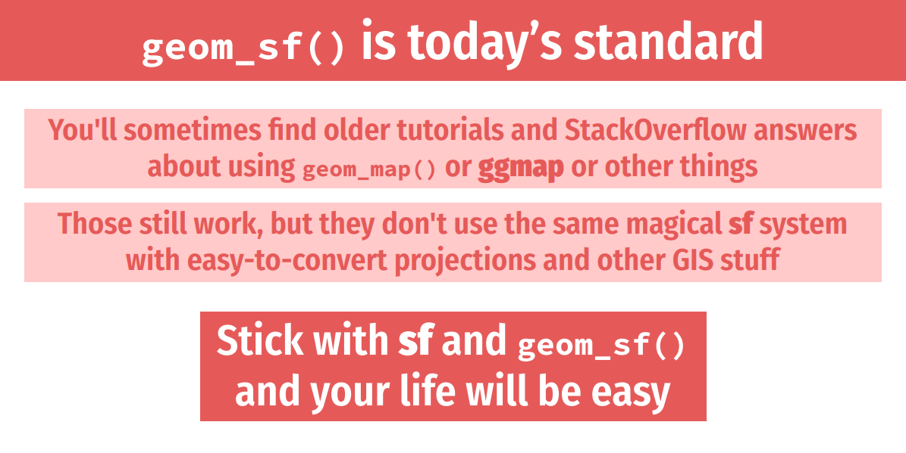
Geometry Type
POLYGON
Simple feature collection with 1 feature and 1 field
Geometry type: POLYGON
Dimension: XY
Bounding box: xmin: -111.0546 ymin: 40.99477 xmax: -104.0522 ymax: 45.00582
Geodetic CRS: WGS 84
# A tibble: 1 × 2
NAME geometry
<chr> <POLYGON [°]>
1 Wyoming ((-106.3212 40.99912, -106.3262 40.99927, -106.3265 40.99927, -106.33…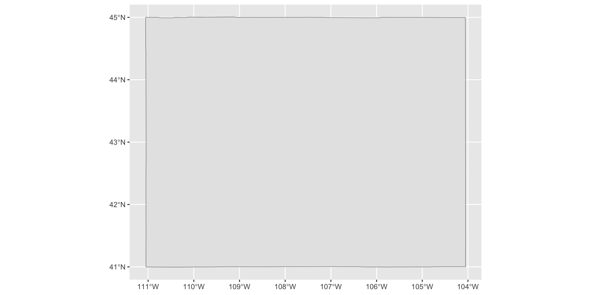
POINT
Simple feature collection with 1 feature and 1 field
Geometry type: POINT
Dimension: XY
Bounding box: xmin: -104.8373 ymin: 41.13005 xmax: -104.8373 ymax: 41.13005
Geodetic CRS: WGS 84
# A tibble: 1 × 2
objectid geometry
<dbl> <POINT [°]>
1 6703 (-104.8373 41.13005)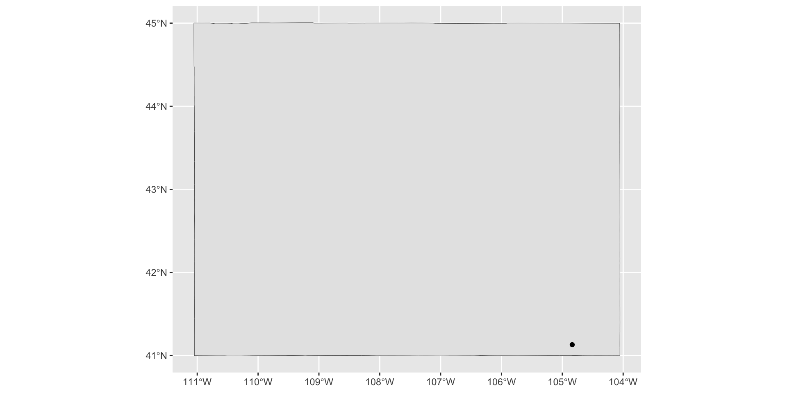
LINESTRING
Simple feature collection with 1 feature and 4 fields
Geometry type: LINESTRING
Dimension: XY
Bounding box: xmin: -107.5054 ymin: 41.74157 xmax: -106.8305 ymax: 41.78956
Geodetic CRS: NAD83
# A tibble: 1 × 5
linearid fullname rttyp mtfcc geometry
<chr> <chr> <chr> <chr> <LINESTRING [°]>
1 11010932011560 US Hwy 30 U S1100 (-106.8305 41.74157, -106.8314 41.74161,…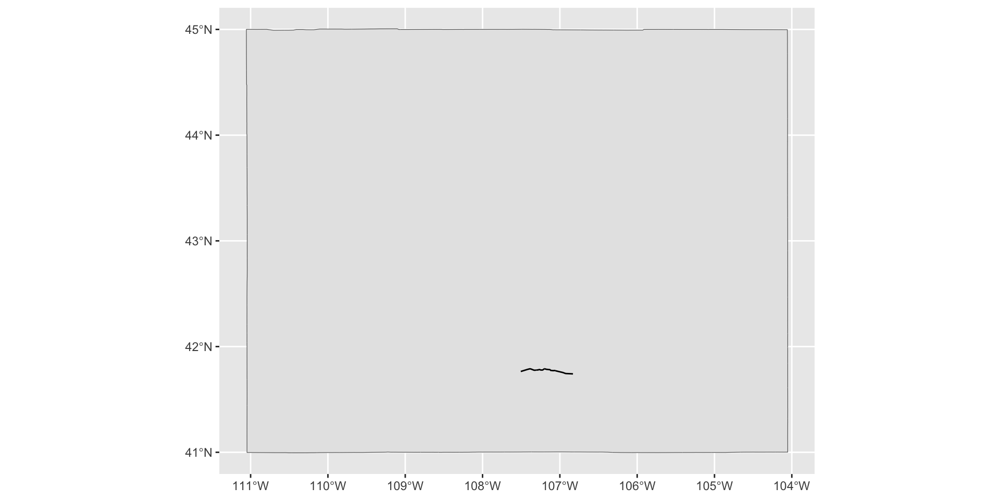
MULTIPOLYGON
Simple feature collection with 1 feature and 0 fields
Geometry type: MULTIPOLYGON
Dimension: XY
Bounding box: xmin: -71.89239 ymin: 41.14656 xmax: -71.12052 ymax: 42.01888
Geodetic CRS: WGS 84
# A tibble: 1 × 1
geometry
<MULTIPOLYGON [°]>
1 (((-71.53173 41.3792, -71.53177 41.37915, -71.53182 41.37915, -71.53187 41.37…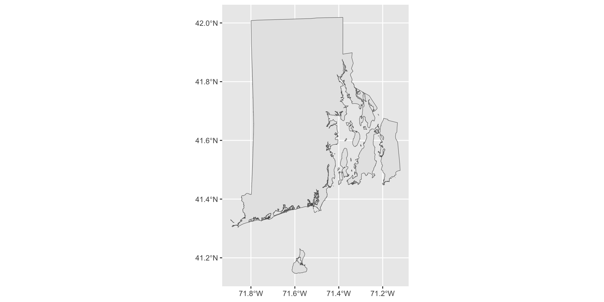
MULTIPOINT
Simple feature collection with 1 feature and 0 fields
Geometry type: MULTIPOINT
Dimension: XY
Bounding box: xmin: -110.9853 ymin: 41.12704 xmax: -104.4527 ymax: 44.97646
Geodetic CRS: WGS 84
# A tibble: 1 × 1
geometry
<MULTIPOINT [°]>
1 ((-104.8373 41.13005), (-110.7649 43.4779), (-104.8406 41.12704), (-104.8406 …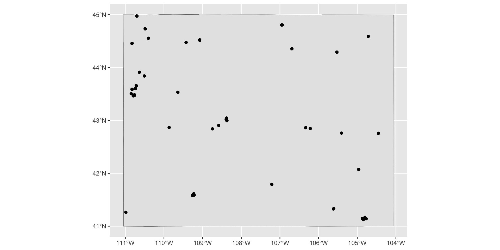
MULTILINESTRING
Simple feature collection with 1 feature and 0 fields
Geometry type: MULTILINESTRING
Dimension: XY
Bounding box: xmin: -111.0545 ymin: 40.9972 xmax: -104.0525 ymax: 45.00457
Geodetic CRS: NAD83
# A tibble: 1 × 1
geometry
<MULTILINESTRING [°]>
1 ((-106.4019 42.85946, -106.402 42.85933, -106.4036 42.85766, -106.4039 42.857…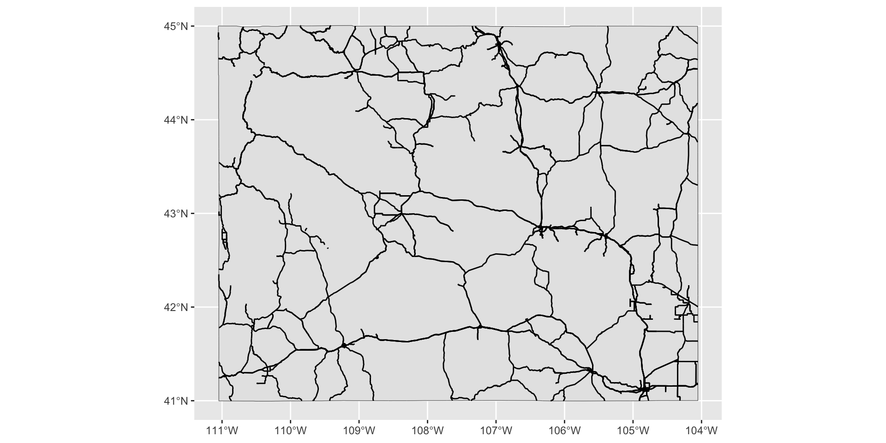
Dimensions
Simple feature collection with 1 feature and 1 field
Geometry type: POLYGON
Dimension: XY
Bounding box: xmin: -111.0546 ymin: 40.99477 xmax: -104.0522 ymax: 45.00582
Geodetic CRS: WGS 84
# A tibble: 1 × 2
NAME geometry
<chr> <POLYGON [°]>
1 Wyoming ((-106.3212 40.99912, -106.3262 40.99927, -106.3265 40.99927, -106.33…Bounding Box
Simple feature collection with 1 feature and 0 fields
Geometry type: MULTIPOLYGON
Dimension: XY
Bounding box: xmin: -71.89239 ymin: 41.14656 xmax: -71.12052 ymax: 42.01888
Geodetic CRS: WGS 84
# A tibble: 1 × 1
geometry
<MULTIPOLYGON [°]>
1 (((-71.53173 41.3792, -71.53177 41.37915, -71.53182 41.37915, -71.53187 41.37…Simple feature collection with 1 feature and 0 fields
Geometry type: POLYGON
Dimension: XY
Bounding box: xmin: -71.89239 ymin: 41.14656 xmax: -71.12052 ymax: 42.01888
Geodetic CRS: WGS 84
geometry
1 POLYGON ((-71.89239 41.1465...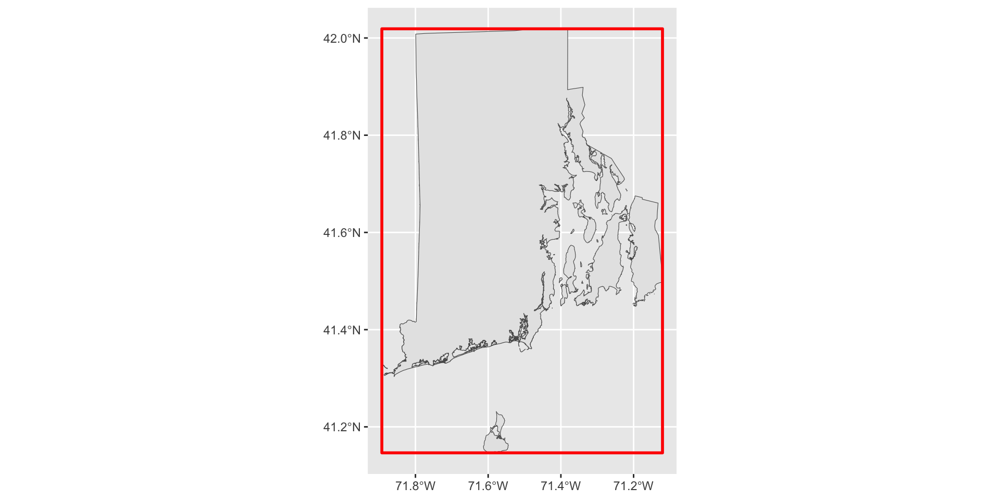
Coordinate Reference System (CRS)
Simple feature collection with 1 feature and 1 field
Geometry type: POLYGON
Dimension: XY
Bounding box: xmin: -111.0546 ymin: 40.99477 xmax: -104.0522 ymax: 45.00582
Geodetic CRS: WGS 84
# A tibble: 1 × 2
NAME geometry
<chr> <POLYGON [°]>
1 Wyoming ((-106.3212 40.99912, -106.3262 40.99927, -106.3265 40.99927, -106.33…Simple feature collection with 1 feature and 1 field
Geometry type: POLYGON
Dimension: XY
Bounding box: xmin: -1250364 ymin: 2027604 xmax: -633753.5 ymax: 2539525
Projected CRS: NAD83 / Conus Albers
# A tibble: 1 × 2
NAME geometry
* <chr> <POLYGON [m]>
1 Wyoming ((-859557.4 2045615, -859974.4 2045677, -859994.4 2045680, -860968.8 …
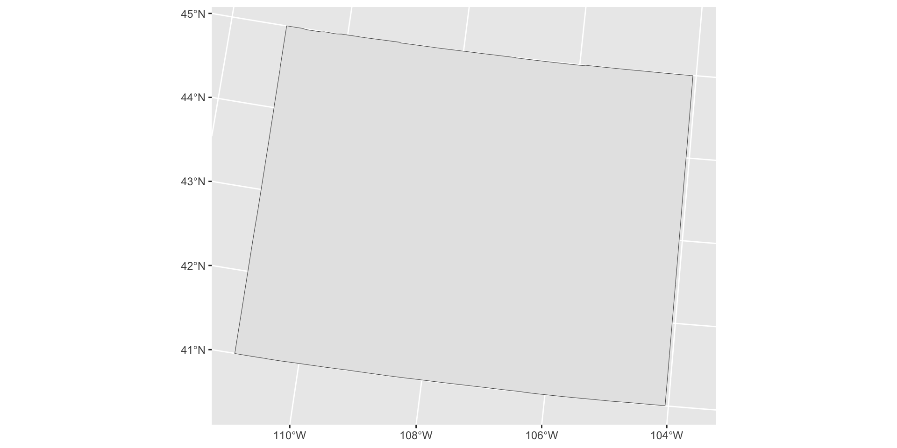
geometry Column
Simple feature collection with 1 feature and 1 field
Geometry type: POLYGON
Dimension: XY
Bounding box: xmin: -111.0546 ymin: 40.99477 xmax: -104.0522 ymax: 45.00582
Geodetic CRS: WGS 84
# A tibble: 1 × 2
NAME geometry
<chr> <POLYGON [°]>
1 Wyoming ((-106.3212 40.99912, -106.3262 40.99927, -106.3265 40.99927, -106.33…# A tibble: 8,583 × 2
longitude latitude
<dbl> <dbl>
1 -106.3212 40.99912
2 -106.3262 40.99927
3 -106.3265 40.99927
4 -106.3382 40.99953
5 -106.3414 40.99957
6 -106.3464 40.99964
7 -106.3514 40.99997
8 -106.3540 40.99997
9 -106.3588 41.00014
10 -106.3756 41.00072
# ℹ 8,573 more rows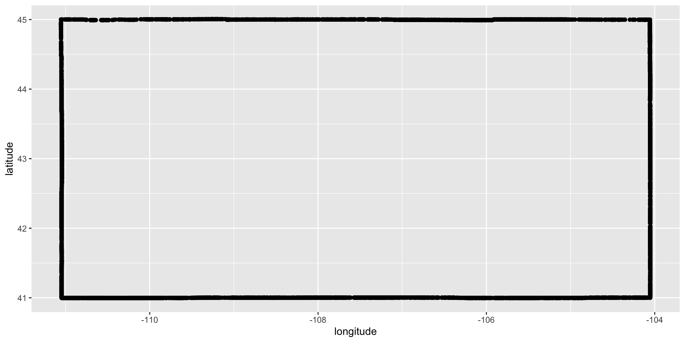
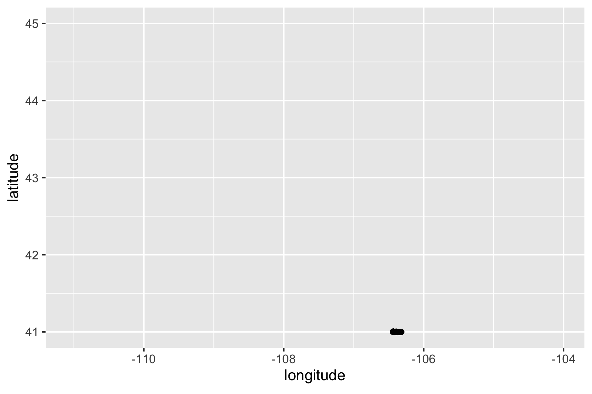
Your Turn
- Run the following code in order to import an
sfobject calledafrica.
Your Turn
Examine your object, ensuring you can identify its geometry type, dimensions, bounding box, coordinate reference system and
geometrycolumn.If you want to, try making a static map with the
geom_sf()function from ggplot and/or an interactive map with themapview()function from the {mapview} package.
Learn More
https://r-spatial.github.io/sf/articles/sf1.html